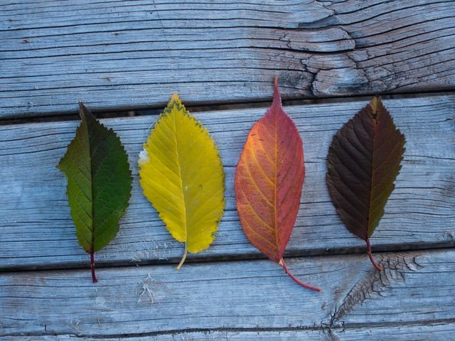
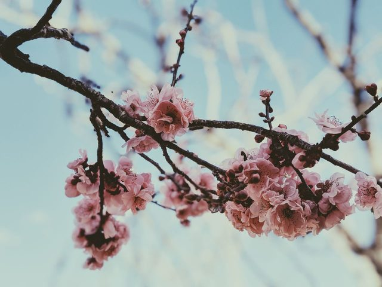

VOCABULARY · LALA WORD UNIT 7
Too Good to Be True．一字多義（七）
fall 是秋天，也是「掉下來」；spring 是春天，也是「彈簧」和「泉水」。這個單元有 4 個主題單字、12 個更多單字，再整理 hear／here、lend／borrow，和都是「說」的 talk／say／speak／tell。
共 16 個單字．點 🔊 聽發音
1tellv.
告訴；說；顯示；分辨
tell - told - told - telling
- 1v.告訴；說 tell a story / joke / lie 說故事／笑話／說謊；tell on 告狀Please tell me about your trip.請告訴我你這趟旅行的事。
- 2v.顯示Her smile told me she was happy.她的微笑告訴我她很開心。
- 3v.分辨 tell A from B 分辨 A 和 BI can't tell the twins apart.我分不出這對雙胞胎。

2startv. / n.
開始；開始；開端；創立
start - started - started - starting
- 1v.開始 start to V / V-ing 開始做；start over 重新開始School starts at eight.八點開始上課。
- 2n.開始；開端 make a fresh start 重新開始We had a good start this year.我們今年有個好的開始。
- 3v.創立 start a business 創業Her parents started a small restaurant.她爸媽開了一家小餐廳。
3calln. / v.
通話；電話；打電話；叫；喊；稱呼；取名
call - called - called - calling
- 1n.通話；電話 make a call 打電話；return a call 回電I got a call from my uncle.我接到叔叔打來的電話。
- 2v.打電話 call back 回電Call me when you get home.到家的時候打電話給我。
- 3v.叫；喊 call for help 呼救；call off 取消Mom is calling us for dinner.媽媽在叫我們吃晚飯。
- 4v.稱呼；取名We call our cat Mimi.我們叫我們的貓咪咪。

4lessonn.
教訓；經驗；課
複數 lessons
- 1n.教訓；經驗 learn a lesson 學到教訓I learned my lesson. I will never be late again.我學到教訓了，再也不會遲到。
- 2n.課 take lessons 上課She takes piano lessons every Friday.她每個星期五上鋼琴課。

5clubn.
社團；俱樂部；夜店；棍棒；球桿
複數 clubs
- 1n.社團；俱樂部I joined the chess club at school.我參加了學校的西洋棋社。
- 2n.夜店They went dancing at a club.他們去夜店跳舞。
- 3n.棍棒；球桿He hit the golf ball with a club.他用球桿打高爾夫球。

6falln. / v.
秋天；瀑布（falls）；掉下；跌倒；下降；變成（某種狀態）
fall - fell - fallen - falling
- 1n.秋天The leaves turn red in fall.秋天葉子變紅。
- 2n.瀑布（falls）We saw the beautiful falls in the mountains.我們在山裡看到美麗的瀑布。
- 3v.掉下；跌倒 fall down 跌倒Be careful! Don't fall down.小心！別跌倒。
- 4v.下降The temperature fell to 10°C last night.昨晚氣溫降到十度。
- 5v.變成（某種狀態） fall asleep 睡著；fall in love 墜入愛河The baby fell asleep in my arms.寶寶在我懷裡睡著了。

7heavyadj.
重的；繁重的；大量的；厚實的
heavy - heavier - heaviest
- 1adj.重的This box is too heavy for me.這個箱子對我來說太重了。
- 2adj.繁重的；大量的 heavy rain 大雨；heavy traffic 交通擁擠There is heavy traffic in the morning.早上交通很擁擠。
- 3adj.厚實的Wear a heavy coat. It's very cold.穿件厚外套，天氣很冷。

8kindadj. / n.
親切的；好心的；種類
kind - kinder - kindest；複數 kinds
- 1adj.親切的；好心的 be kind to 對…好It's very kind of you to help me.你幫我真是太好心了。
- 2n.種類 all kinds of 各式各樣的What kind of music do you like?你喜歡哪一種音樂？
9meanv. / adj.
意思是；故意；打算；有意義；很重要；刻薄的；兇的；小氣的
mean - meant - meant - meaning；mean - meaner - meanest
- 1v.意思是What does this word mean?這個字是什麼意思？
- 2v.故意；打算Sorry, I didn't mean to hurt you.對不起，我不是故意要傷害你。
- 3v.有意義；很重要Your letter means a lot to me.你的信對我意義重大。
- 4adj.刻薄的；兇的 be mean to 對…很兇Don't be mean to your little sister.不要對妹妹那麼兇。
- 5adj.小氣的He is mean with his money.他對錢很小氣。
10minepron. / n.
我的（東西）；礦坑；地雷
- 1pron.我的（東西）This pen is not mine.這支筆不是我的。
- 2n.礦坑The workers dig for gold in the mine.工人在礦坑裡挖金子。
- 3n.地雷Mines are very dangerous.地雷非常危險。

11orderv. / n.
點餐；訂購；訂單；點的餐；命令；順序
order - ordered - ordered - ordering
- 1v.點餐；訂購Are you ready to order?您準備好點餐了嗎？
- 2n.訂單；點的餐 take one's order 幫…點餐；place an order 下訂單The waiter took our order.服務生幫我們點餐。
- 3v.命令 order + 人 + to V 命令某人做The coach ordered us to run five laps.教練命令我們跑五圈。
- 4n.順序 in order to 為了Put the words in the right order.把這些字排成正確的順序。

12ownadj. / v.
自己的；擁有
own - owned - owned - owning
- 1adj.自己的 on one's own 獨自I have my own room now.我現在有自己的房間了。
- 2v.擁有My uncle owns a big farm.我叔叔擁有一座大農場。

13pooradj.
貧窮的；可憐的；不擅長的；不好的；差的
poor - poorer - poorest
- 1adj.貧窮的The family was too poor to buy a car.那家人窮得買不起車。
- 2adj.可憐的The poor dog was left in the rain.那隻可憐的狗被丟在雨中。
- 3adj.不擅長的 be poor at 不擅長I'm poor at math.我數學不好。
- 4adj.不好的；差的 poor health 健康不佳He is in poor health.他身體不好。

14seasonn. / v.
季節；季；時期；調味
season - seasoned - seasoned - seasoning
- 1n.季節Which season do you like best?你最喜歡哪個季節？
- 2n.季；時期 in season 當季；rainy season 雨季Mangoes are in season now.現在是芒果的產季。
- 3v.調味Season the soup with a little salt.在湯裡加一點鹽調味。

15snown. / v.
雪；下雪
snow - snowed - snowed - snowing
- 1n.雪The kids made a snowman in the snow.孩子們在雪地裡堆雪人。
- 2v.下雪It snowed on Hehuan Mountain last night.昨晚合歡山下雪了。

16springn. / v.
春天；彈簧；泉水；跳起；突然出現
spring - sprang - sprung - springing
- 1n.春天Flowers bloom in spring.花在春天盛開。
- 2n.彈簧This old bed has a broken spring.這張舊床有一根彈簧壞了。
- 3n.泉水 hot spring 溫泉We went to Beitou to enjoy the hot springs.我們去北投泡溫泉。
- 4v.跳起；突然出現 spring up 快速出現The cat sprang onto the table.貓一躍跳上桌子。
FOCUS
易混淆字：hear 和 here（發音一樣）
| 單字 | 意思 | 例句 |
|---|---|---|
| hear | （動詞）聽到 | Can you hear me? |
| here | （副詞）這裡；Here you are. 給你 | Come here, please. |
聽力題兩個字發音一樣，要看上下文判斷。
FOCUS
易混淆字：lend 和 borrow
| 單字 | 用法 | 例句 |
|---|---|---|
| lend | 借出（主詞是借給別人的人）：lend + 物 + to + 人 | Can you lend me your eraser? |
| borrow | 借入（主詞是向別人借的人）：borrow + 物 + from + 人 | Can I borrow your eraser? |
lend - lent - lent；borrow - borrowed - borrowed。
FOCUS
易混淆字：talk／say／speak／tell
| 單字 | 用法 | 例句 |
|---|---|---|
| talk | 聊天、討論：talk to / with + 人、talk about + 事 | We talked about the movie. |
| say | 說的「內容」；告示、時鐘也可以 say | The sign says "No Smoking." |
| speak | 說某種語言；比較正式的說話 | Can you speak Japanese? |
| tell | 告訴某人：tell + 人 + 事；tell a story / a lie | Tell me the truth. |
FOCUS
一字多義：最常見 vs. 容易忽略的意思
| 單字 | 最常見的意思 | 容易忽略的意思 |
|---|---|---|
| fall | 秋天 | 掉下；falls 瀑布 |
| spring | 春天 | 彈簧；泉水 |
| mean | 意思是 | 刻薄的；小氣的 |
| mine | 我的 | 礦坑；地雷 |
| club | 社團 | 球桿 |
| kind | 親切的 | 種類 |
| season | 季節 | 調味 |